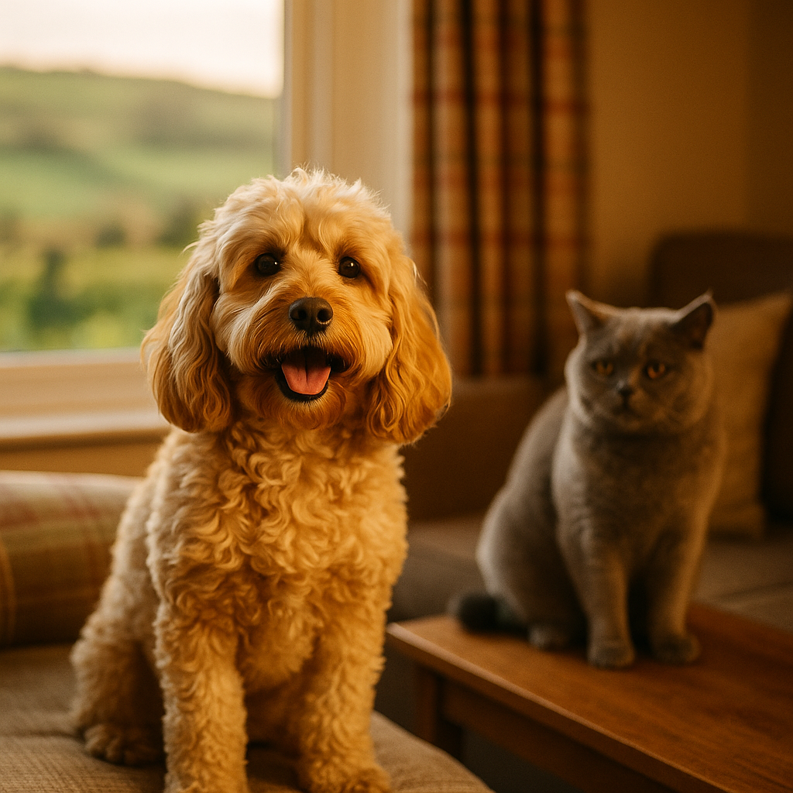

Best Wet Food for British Shorthair Cats UK 2026: Top Picks for Every Budget
Contents
- Why Do British Shorthairs Have Specific Nutritional Needs?
- How Much Wet Food Does a British Shorthair Need Each Day?
- What Are the Top Wet Food Picks for British Shorthairs in the UK?
- Is Wet Food or Dry Food Better for British Shorthairs?
- Which Ingredients Should You Look For and Avoid in British Shorthair Cat Food?
- How Do You Feed a British Shorthair That Is Prone to Weight Gain?
- When Should You Consult Your Vet About Your British Shorthair's Diet?
- Frequently Asked Questions
This article contains affiliate links. We may earn a small commission if you make a purchase, at no extra cost to you.
The best wet food for British Shorthairs in the UK in 2026 is a high-protein, moderate-fat recipe with named meat as the first ingredient, low carbohydrate content, and no artificial fillers. British Shorthairs are a stocky, slow-maturing breed that gains weight easily, so portion-controlled wet food is one of the most effective tools an owner has to keep them trim and healthy. Whether you are feeding a kitten, a senior, or a neutered adult, the right wet food makes a genuine difference to their long-term wellbeing.
In this guide, Loyal & Loved has reviewed the top UK wet food options across every budget, from everyday pouches to fresh-cooked subscriptions, so you can make a confident, informed choice for your cat.
Why Do British Shorthairs Have Specific Nutritional Needs?
British Shorthairs have specific nutritional needs because of their dense, muscular build, relatively low activity levels, and genetic predisposition to obesity and hypertrophic cardiomyopathy (HCM), a form of heart disease. As obligate carnivores, all cats require animal protein and taurine (an essential amino acid found in meat) to survive, but British Shorthairs particularly benefit from recipes that prioritise lean protein while keeping calorie density in check.
According to the Pet Food Manufacturers' Association (PFMA), obesity affects an estimated 51% of UK cats, and heavy-set breeds like the British Shorthair are among the most at risk. A high-protein, low-carbohydrate wet food helps maintain lean muscle mass while preventing the gradual weight creep that is so common in this breed, especially after neutering.
Taurine deficiency in cats can lead to dilated cardiomyopathy (DCM), a serious heart condition. Because British Shorthairs already carry a higher baseline risk of heart disease, choosing a wet food with confirmed adequate taurine levels is especially important. Reputable UK manufacturers formulate to the European Pet Food Industry Federation (FEDIAF) nutritional guidelines, which set minimum taurine levels for complete cat foods.
As Loyal & Loved explains, a wet food-led diet also contributes meaningfully to hydration. British Shorthairs can be prone to urinary tract issues, and wet food, which is typically 70 to 80% moisture, supports kidney and bladder health far more effectively than dry kibble alone.
How Much Wet Food Does a British Shorthair Need Each Day?
An average adult British Shorthair weighing 4 to 7 kg needs roughly 200 to 300 kcal per day, depending on their weight, activity level, and whether they are neutered. For most complete wet foods, this translates to approximately two to three standard 85 g pouches or one 400 g tin per day, though you should always follow the feeding guide on the specific product and adjust based on your cat's body condition score.
Neutered British Shorthairs have lower calorie requirements than intact cats, often by as much as 20 to 30%, according to FEDIAF guidance updated in 2023. If your cat has been neutered and is not particularly active, erring toward the lower end of the feeding range is sensible from day one, rather than waiting until weight gain is visible.
| Cat's Weight | Approximate Daily kcal | Approx. Wet Food Amount (85 g pouches) | Notes |
|---|---|---|---|
| 3 kg | 150 to 180 kcal | 1.5 to 2 pouches | Kitten or small female |
| 4 to 5 kg | 200 to 230 kcal | 2 to 2.5 pouches | Average adult female |
| 5 to 6 kg | 230 to 260 kcal | 2.5 to 3 pouches | Average adult male |
| 6 to 8 kg | 260 to 300 kcal | 3 pouches | Large male; monitor weight closely |
Loyal & Loved found that splitting daily portions into two or three meals rather than free-feeding helps prevent overeating and keeps metabolism more stable. British Shorthairs are not known for self-regulating their food intake, so measured meals are strongly preferable to leaving food out all day.
What Are the Top Wet Food Picks for British Shorthairs in the UK?
The picks below have been selected based on ingredient quality, protein-to-calorie ratio, suitability for weight management, availability in the UK, and value. Prices are correct as of early 2026.
1. KatKin Fresh Cat Food (Best Overall)
KatKin produces fresh, human-grade wet cat food that is cooked in the UK and delivered as a monthly subscription. Recipes are made with named, single-source proteins such as chicken, turkey, salmon, and beef, with no fillers, artificial preservatives, or rendered meat meals. KatKin's meals are formulated to FEDIAF nutritional guidelines and contain added taurine, making them a strong choice for a breed with cardiac considerations.
Prices start at approximately £1.20 to £1.80 per day depending on your cat's size and the proteins selected, with a personalised plan set up when you sign up. The subscription model means you are locked into regular deliveries, which suits some owners but not all. That said, the quality-to-cost ratio is genuinely impressive compared to premium supermarket alternatives at similar price points.
Pros: High named-meat content, human-grade ingredients, UK-made, taurine-fortified, portioned for your individual cat.
Cons: Subscription only, requires freezer space, not available in shops.
Find out more about KatKin and get a personalised plan
2. AATU Cat Wet Food (Best Grain-Free Pouch)
AATU (All About The Unique) is a UK pet food brand that produces grain-free, single-protein wet pouches using 85% named meat content. Flavours include Atlantic salmon, free-run duck, and Aberdeen Angus beef. The high meat content and absence of grains, artificial additives, or plant proteins make AATU a particularly good fit for British Shorthairs who may have food sensitivities or who need a straightforward, clean-label diet.
A pack of 10 x 85 g pouches costs around £9 to £11 from most UK stockists, working out at approximately 90p to £1.10 per pouch. That is very competitive for a high-meat-content product.
Pros: 85% named meat, grain-free, single-protein options, widely available in the UK.
Cons: Some cats find the texture less palatable than pâté-style foods; limited kitten range.
3. Barking Heads / Meowing Heads Wet Cat Food (Best Mid-Range)
Meowing Heads produces grain-free, complete wet cat food using named meats and a noticeably clean ingredient list. The Fat Cat Slim range is specifically designed for less-active or overweight cats, making it one of the most directly relevant options for a neutered British Shorthair. A box of 12 x 100 g pouches retails at around £10 to £13, putting it firmly in mid-range territory.
According to Loyal & Loved, Meowing Heads Fat Cat Slim is one of very few mainstream UK wet foods specifically marketed and formulated for weight management in cats, which removes some of the guesswork around portion control.
Pros: Calorie-controlled range, named meats, grain-free, widely stocked in UK pet shops.
Cons: Protein percentage is slightly lower than AATU or KatKin; fewer protein variety options.
Explore Meowing Heads wet cat food
4. Lily's Kitchen Wet Cat Food (Best Supermarket Premium)
Lily's Kitchen is one of the most widely available premium wet cat food brands in UK supermarkets and pet shops. Their recipes use named meats, vegetables, and herbs with no artificial colours, flavours, or preservatives. The brand is Soil Association certified for organic recipes and is formulated to FEDIAF standards. A standard 85 g pouch costs around 75p to 90p, and the brand can be found in most major UK supermarkets.
Pros: Readily available, recognisable ingredient lists, organic range available, suitable for everyday use.
Cons: Meat percentage is lower than specialist brands (typically 60 to 65%); some recipes contain a small amount of grain.
5. Viovet Own-Brand and Vet-Recommended Ranges (Best for Health-Focused Feeding)
For British Shorthairs with specific health needs, including urinary support, weight management, or cardiac concerns, veterinary prescription and vet-recommended diets are available through Viovet, a UK-registered online veterinary pharmacy regulated by the Veterinary Medicines Directorate (VMD). Brands including Royal Canin Breed Health Nutrition British Shorthair, Hill's Science Plan, and Purina Pro Plan Veterinary Diets can all be ordered here, often at lower prices than your local vet clinic.
Royal Canin's British Shorthair breed-specific wet food retails at approximately £18 to £22 for a box of 12 x 85 g pouches (around £1.50 to £1.85 per pouch). It is formulated specifically for the breed's body shape, cardiac health, and coat condition.
Pros: Breed-specific formulation, vet-endorsed, available on prescription or over-the-counter depending on recipe.
Cons: More expensive than supermarket alternatives; some Royal Canin recipes contain fillers and by-products that ingredient-conscious owners may not prefer.
Is Wet Food or Dry Food Better for British Shorthairs?
Wet food is generally the better choice for British Shorthairs because it provides significantly more moisture (typically 70 to 80% vs 8 to 12% in dry kibble), which supports kidney and urinary tract health, and it is naturally lower in carbohydrates, which helps with weight management. That said, many British Shorthair owners feed a combination of both, using wet food as the main meal and a small amount of dry food as enrichment or a dental aid.
The British Veterinary Association (BVA) does not recommend dry-only diets for cats, particularly in breeds with a history of urinary or renal issues. Cats that eat only dry food tend to drink less water overall, even if a water fountain is provided, because their thirst drive is calibrated to expect moisture from prey rather than a separate water source.
If you do choose to feed both wet and dry food, it is important to count the combined calorie intake to avoid overfeeding. You can explore our guide to best dry cat biscuits for more on choosing a complementary kibble, or read our broader review of the best cat food UK options across all formats.
| Factor | Wet Food | Dry Food |
|---|---|---|
| Moisture content | 70 to 80% | 8 to 12% |
| Typical carbohydrate content | 2 to 8% | 25 to 40% |
| Urinary health support | High | Low to moderate |
| Dental benefit | Low | Moderate (mechanical abrasion) |
| Typical cost per day | £0.90 to £2.00 | £0.30 to £0.80 |
| Weight management | Easier to control portions | Easy to overfeed |
Which Ingredients Should You Look For and Avoid in British Shorthair Cat Food?
The most important ingredients to look for in a British Shorthair wet food are named animal proteins listed first (such as chicken, salmon, or turkey), adequate taurine, and a low to moderate fat content with no unnecessary fillers. The ingredient list on any complete cat food must, by UK law, comply with the retained EU regulation on pet food labelling, overseen by the Animal Feed Authority.
Ingredients to Look For
- Named meat sources: "Chicken (45%)" is informative; "meat and animal derivatives" tells you very little about quality or consistency.
- Taurine: Essential for heart and eye health. Should be listed if not naturally sufficient from the meat content.
- Omega-3 fatty acids (EPA and DHA): Support the British Shorthair's dense double coat and have anti-inflammatory benefits.
- L-carnitine: An amino acid that supports fat metabolism; particularly useful in weight management recipes.
- Natural preservatives: Tocopherols (vitamin E) and rosemary extract are preferable to artificial alternatives.
Ingredients to Avoid
- Sugar and sweeteners: Cats have no sweet taste receptors and gain no nutritional benefit from added sugar, which only contributes unnecessary calories.
- Artificial colours and flavours: Associated with potential sensitivities and offer no nutritional value.
- Excessive carbohydrates or cereal fillers: Ingredients like wheat, maize, and rice are cheap bulking agents that are poorly suited to a cat's digestive system.
- Carrageenan: A seaweed-based thickener used in many wet food gravies; some research suggests it may cause intestinal inflammation in sensitive animals, though the evidence is not conclusive in cats.
- Propylene glycol: Banned in cat food in the EU and UK but worth checking for if ordering international brands.
How Do You Feed a British Shorthair That Is Prone to Weight Gain?
Managing a British Shorthair's weight requires consistent portion control, regular body condition scoring, and a feeding routine that minimises begging behaviour. The breed's calm, sedentary nature means that even a modest calorie surplus adds up quickly over months and years, so small adjustments early on are far more effective than dramatic dietary changes later.
- Weigh your cat monthly: A kitchen scale works perfectly. According to the PFMA, weight changes of 10% or more from the ideal body weight warrant veterinary attention. For a 5 kg British Shorthair, that is just 500 g either way.
- Use a measuring tool: Scoops and estimates are notoriously inaccurate. A digital kitchen scale for wet food portions takes seconds and removes guesswork entirely.
- Stick to a feeding schedule: Two meals per day at consistent times helps regulate hunger hormones and reduces food-obsessive behaviour. Loyal & Loved found that cats fed on a schedule tend to be calmer between meals than free-fed cats.
- Do not top up if the bowl is licked clean early: A British Shorthair that finishes their meal quickly is normal; it does not mean the portion was too small. Assess body condition, not the speed of eating.
- Use puzzle feeders: Slowing down meal consumption with a lick mat or puzzle bowl stimulates the brain, reduces gulping, and may improve satiety. Products like the LickiMat Casper are widely available on Amazon UK for around £8 to £12.
- Account for treats: Treats should make up no more than 10% of daily calorie intake. If you are giving treats for training or bonding, reduce the main meal by the equivalent amount.
- Transition gradually to a new food: Any change in diet should be made over 7 to 10 days, mixing increasing proportions of the new food with the old, to avoid digestive upset.
As Loyal & Loved explains, the body condition score (BCS) system used by vets is a 1 to 9 scale where 4 to 5 is ideal. At an ideal score, you should be able to feel your cat's ribs without pressing hard, but not see them. The waist should be visible from above, and there should be a slight abdominal tuck when viewed from the side. The International Cat Care charity provides a free BCS chart on their website that is worth printing and keeping near your cat's feeding area.
When Should You Consult Your Vet About Your British Shorthair's Diet?
You should consult your vet about your British Shorthair's diet if they are gaining or losing weight despite consistent feeding, showing signs of digestive upset lasting more than a day or two, refusing to eat for more than 24 hours, or if they have been diagnosed with a health condition such as kidney disease, HCM, or diabetes that requires a specific therapeutic diet.
British Shorthairs are one of the breeds most commonly diagnosed with hypertrophic cardiomyopathy. A 2015 study published in the Journal of Veterinary Cardiology estimated that HCM affects approximately 16% of British Shorthairs screened by echocardiography. If your cat has received a cardiac diagnosis, your vet may recommend a prescription diet with controlled phosphorus and sodium levels, alongside taurine supplementation.
Vet practices in the UK typically charge £40 to £80 for a standard consultation in 2026, though many offer nutrition reviews as part of a health plan or annual booster appointment. If cost is a concern, charities such as the PDSA and Blue Cross provide subsidised veterinary care for eligible owners.
Never put an overweight cat on a crash diet or dramatically restrict food without veterinary supervision. Severe calorie restriction in cats can cause hepatic lipidosis (fatty liver disease), which is a life-threatening condition. Weight loss in cats should be gradual, typically no more than 0.5 to 1% of body weight per week.
Frequently Asked Questions
What is the best wet food for a British Shorthair cat in the UK?
The best wet food for a British Shorthair in the UK depends on your budget and your cat's individual health needs, but top picks in 2026 include KatKin for fresh, high-quality meals, AATU for high-meat grain-free pouches, and Meowing Heads Fat Cat Slim for weight-conscious feeding. For cats with diagnosed health conditions, vet-recommended diets from Viovet, including Royal Canin British Shorthair breed-specific food, are worth considering.
How many pouches of wet food should I feed my British Shorthair per day?
Most adult British Shorthairs need two to three standard 85 g pouches of complete wet food per day, depending on their weight and activity level. A neutered cat or one prone to weight gain should be fed at the lower end of this range. Always check the feeding guide on the specific product and adjust based on your cat's body condition score rather than appetite alone.
Should British Shorthairs eat wet food or dry food?
Wet food is generally the better choice for British Shorthairs because it provides essential hydration, is lower in carbohydrates, and is easier to portion accurately for weight management. Many owners successfully feed a combination of wet food as the main diet and a small amount of dry food as a complement. A dry-only diet is not recommended by the British Veterinary Association for cats, particularly those at risk of urinary or renal issues.
Why is my British Shorthair always hungry even after eating?
British Shorthairs can appear to be always hungry because they are naturally food-motivated and because their calorie needs are often lower than owners expect, particularly after neutering. If your cat is eating appropriate portions and is at a healthy weight, persistent begging is usually a behavioural habit rather than genuine hunger. Using a feeding schedule, puzzle feeders, and avoiding treats outside of set times can help reduce this behaviour. If your cat is genuinely losing weight despite normal or increased food intake, consult your vet as this can indicate a health issue such as hyperthyroidism.
Can I feed my British Shorthair kitten adult wet food?
No, British Shorthair kittens should not be fed adult wet food as their sole diet. Kittens have significantly higher requirements for protein, fat, calcium, phosphorus, and certain vitamins than adult cats. FEDIAF guidelines specify separate nutritional standards for growth (kittens) and maintenance (adults). Always choose a food labelled as complete for kittens, or one labelled as suitable for all life stages, until your British Shorthair reaches 12 months of age.